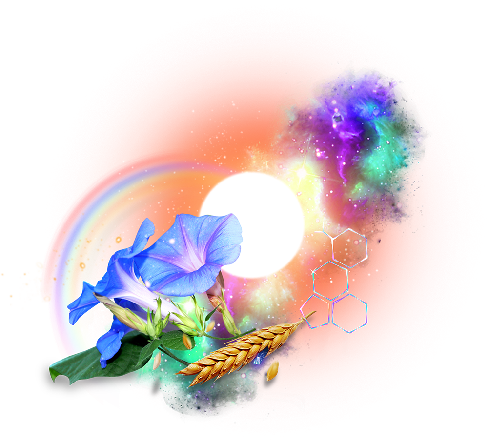

General wizardy
"Ok... you're a wizard..."
Indeed, I am a Wizard.
"Do you believe in magic?"
Sure, why not?
I didn't say it first, or best, but the difference between science and magic is largely
understanding. If you do a thing, and it works, and you know why, it is science. If you do a thing
and it (mostly) works, and you don't know why, that's magic.
The world was full of magic once, and that was good because the other option was no magic. We have
slowly ironed out and nailed down our magic into science, and that is also good because it makes
magic available for everyone.
We may cycle around to a magical world again, but for now, we have very little magic left.
Psilocybin, ayahuasca and the numerous cacti are where it grows.
It logically follows that if I am a skilled practitioner of these not understood magics, then I
must be a wizard of some sort. I have a robe and hat. I have a cauldron, wand, staff, and dagger. My
familiar is a cat named Wizard. So, yeah, it's my company and my job title, so I'm a wizard.
Certified.
Be brave; give me a call.
I am open and accepting of whatever spiritual practice you have if it makes you happy and I do not
discuss any of my own unless requested.